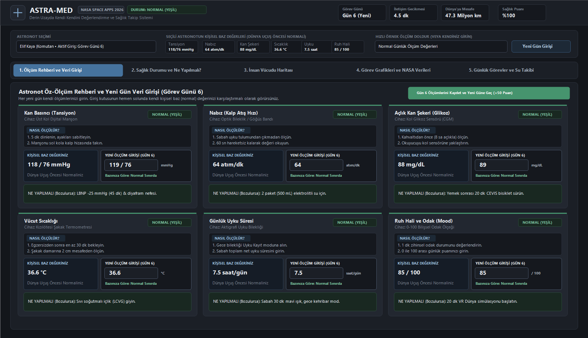
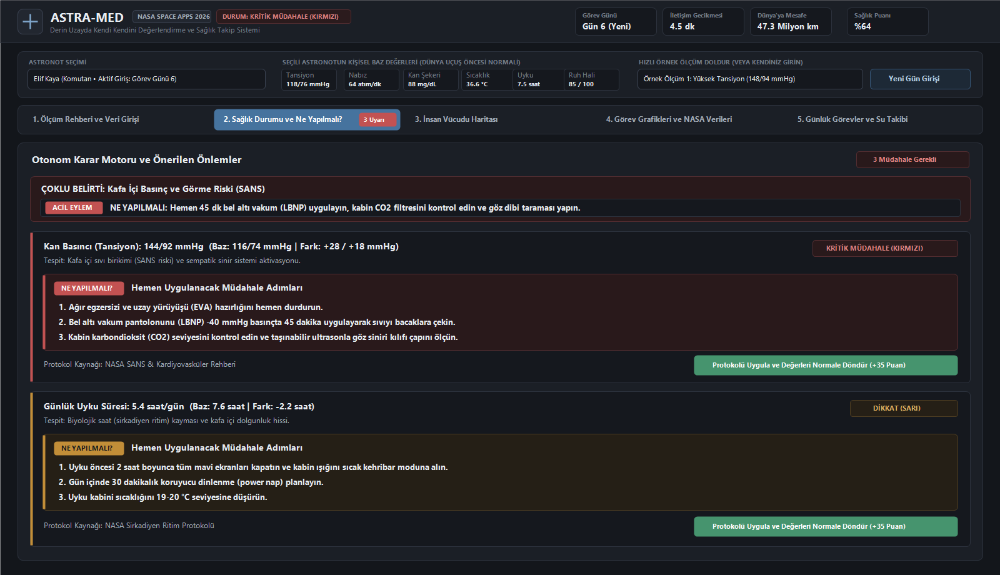
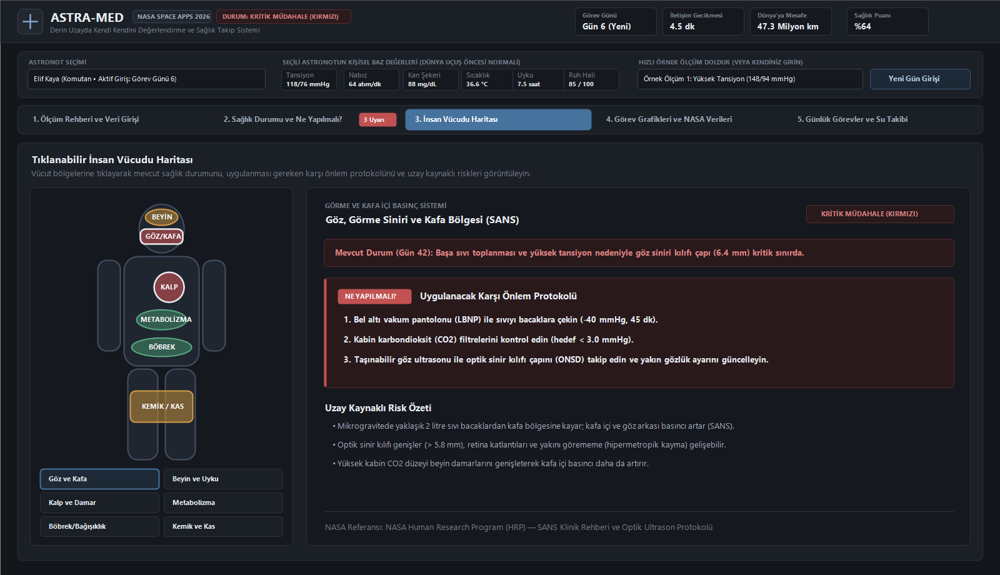
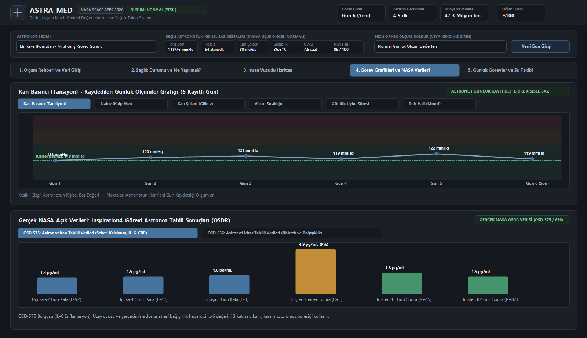
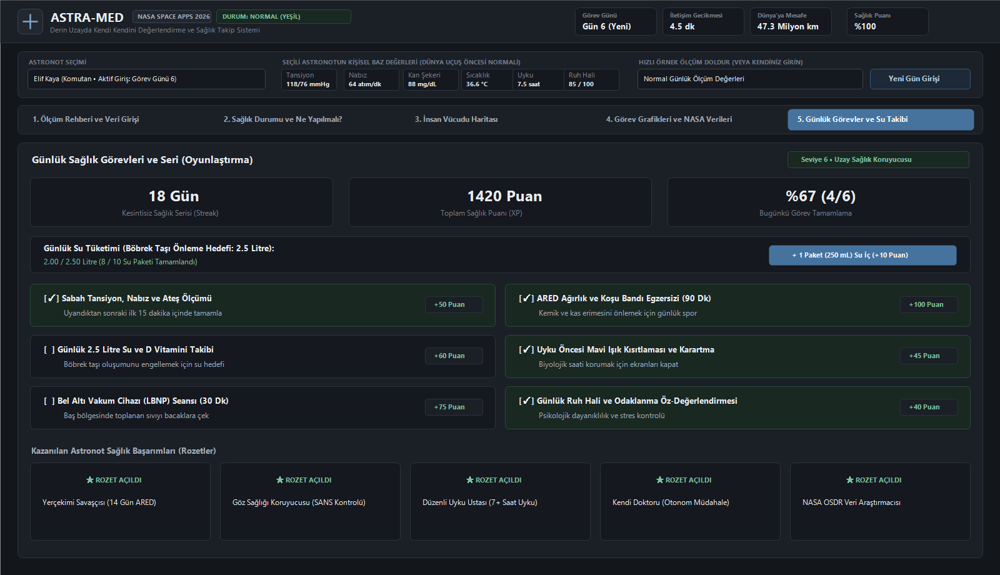

1. Problem ve Çözüm: Rehberli Öz-Ölçüm ve Veri Giriş Sistemi
- Problem: Mars yolculuğunda Dünya ile iletişim gecikmesi 20 ila 40 dakikaya çıkar. Astronot acil durumda Dünya'daki uçuş doktorunu bekleyemez.
- Rehberli Öz-Ölçüm ve Veri Girişi: Astronot 6 temel sağlık metriğini (Tansiyon, Nabız, Kan Şekeri, Sıcaklık, Uyku, Ruh Hali) her karttaki "Nasıl Ölçülür?" adımlarını uygulayarak kendisi ölçer ve doğrudan veri giriş kutularına kaydeder.
- Anlık Baz Çizgisi Karşılaştırması: Girilen her ölçüm astronotun kendi uçuş öncesi baz değerine (baseline) göre anında Yeşil, Sarı veya Kırmızı olarak değerlendirilir ve kayıt defterine işlenir.
"Merhaba değerli jüri üyeleri. Mars yolculuğunda Dünya ile iletişim gecikmesi çift yönlü 40 dakikaya ulaşıyor. Yani bir astronotun Dünya'daki doktorlardan anlık yardım alması imkansız. Bu yüzden geliştirdiğimiz ASTRA-MED'de astronot; kan basıncı, nabız, kan şekeri, vücut sıcaklığı, uyku ve ruh halini her karttaki 'Nasıl Ölçülür?' rehberini takip ederek kendisi ölçer ve doğrudan veri giriş ekranına kaydeder. Sistem, girilen her değeri astronotun kendi kişisel uçuş öncesi baz çizgisine (baseline) göre anında Yeşil, Sarı ve Kırmızı renk kodlarıyla analiz eder."

2. Otonom Karar Motoru ve Vurgulu "NE YAPILMALI?" Protokolü
- Neden Farklı? Astronotlara "kalp ne işe yarar" gibi ders kitabı bilgileri göstermez; doğrudan "NE YAPILMALI?" sorusuna yanıt verir.
- Çoklu Belirti Tespiti: Örneğin yüksek tansiyon + başa sıvı toplanması birleştiğinde SANS (Görme Siniri Ödemi) riskini otomatik yakalar.
- Adım Adım Karşı Önlem: LBNP bel altı vakum pantolonu (-40 mmHg, 45 dk), kabin CO2 kontrolü ve ARED egzersiz modifikasyonunu 1-2-3 maddede sunar.
"Peki bir sağlık anomalisi yaşandığında sistem nasıl çalışıyor? Üstteki Anomali Simülatöründen 'Başa Sıvı Toplanması ve Yüksek Tansiyon' senaryosunu tetiklediğimizde, Otonom Karar Motorumuz astronotun kendi baz değerinden sapmayı anında yakalar. Uygulamamız astronota temel biyoloji dersi anlatmaz; tek satırda tespiti yapar ve hemen altındaki vurgulu 'NE YAPILMALI?' kutusunda uygulanacak NASA protokolünü 3 net adımda sıralar: 1. Ağır egzersizi durdur, 2. 45 dakika LBNP bel altı vakum pantolonu uygula, 3. Göz siniri çapını ultrasonla ölç. Astronot önlemi uyguladığında değerler stabilize olur."

3. Tıklanabilir İnsan Vücudu Haritası ve Müdahale Rehberi
- 6 Kritik Vücut Bölgesi: Göz/Kafa (SANS), Beyin/Uyku, Kalp/Damar, Metabolizma, Böbrek/Bağışıklık ve Kemik/Kas.
- Canlı Durum Bağlantısı: Haritadaki organlar o anki ölçümlere göre otomatik olarak Yeşil, Sarı veya Kırmızıya döner.
- Eylem Odaklı Detay: Bir bölgeye tıklandığında en üstte NE YAPILMALI? (Uygulanacak Karşı Önlem Protokolü) ve altında kısa uzay riskleri yer alır.
"İkinci sekmemizde Tıklanabilir İnsan Vücudu Haritası yer alıyor. Mikrogravite vücudun her bölgesini farklı etkiler. Astronot harita üzerinde Göz/Kafa, Kalp veya Kemik/Kas bölgesine tıkladığında; o bölgenin anlık durumunu ve en üstte 'NE YAPILMALI? — Uygulanacak Karşı Önlem Protokolü' kutusunu görür. Ayrıca 4. sekmemizdeki Ölçüm ve Müdahale Rehberi, her ölçümün uzayda hatasız yapılması için gereken kuralları ve bozulma anında yapılacak müdahaleyi özetler."

4. 180 Günlük Zaman Grafikleri ve Gerçek NASA OSDR Verileri
- Şeffaf Veri Etiketlemesi: Hangi verinin sentetik simülasyon, hangisinin gerçek NASA uçuş verisi olduğu arayüzde açıkça etiketlenmiştir.
- 180 Günlük Trend (Üst Grafik): 5 görev dönemini (İlk Uyum, Kemik Koruma, Uyku Kayması, Güneş Fırtınası, İniş) kapsayan tıklanabilir zaman serisi.
- Gerçek NASA OSDR (Alt Grafik): NASA Open Science Data Repository'den alınan gerçek Inspiration4 (OSD-575 Kan ve OSD-656 İdrar) biyobelirteç verileri.
"Üçüncü sekmemizde verilerin görev günleri boyunca değişimini sunuyoruz. Gerçek astronotların saatlik tansiyon verileri gizlilik nedeniyle açık olmadığından, NASA makalelerindeki fizyolojik sınırlara uygun 180 günlük sentetik JSON veri seti ürettik. Hemen altında ise doğrudan NASA Open Science Data Repository (OSDR) üzerinden aldığımız gerçek Inspiration4 uzay görevi (OSD-575 ve OSD-656) kan ve idrar biyobelirteçlerini görüyorsunuz. Örneğin uçuşta enflamasyon habercisi IL-6 ve idrar kalsiyumundaki gerçek artışları karar motorumuzun eşik değerlerinde kullandık."

5. Oyunlaştırma (Seri/Görev) ve Kapanış
- Uzun Görevlerde Motivasyon: 6 aylık kapalı kabin ortamında günlük egzersiz ve su takibini aksatmamak hayati önem taşır.
- Seri (Streak) ve Su Takibi: Kemik yıkımından kaynaklanan böbrek taşı riskini önlemek için 2.5 Litre (10 paket) su takipçisi, 90 dk ARED egzersiz görevi ve rozet sistemi.
- Tam Bağımsız Mimari: Sıfır dış kütüphane, %100 çevrimdışı (offline) çalışabilen hafif kokpit yazılımı.
"Son olarak 5. sekmemizde, aylarca süren uzay görevlerinde astronotun günlük rutinlerini aksatmaması için Oyunlaştırma (Gamification) modülümüz bulunuyor. Böbrek taşı riskini önleyen 2.5 litrelik su takipçisi, 90 dakikalık ARED egzersizi, Kesintisiz Seri (Streak) ve rozetlerle koruyucu sağlık alışkanlıklarını teşvik ediyoruz. Özetle ASTRA-MED, NASA OSDR verileriyle güçlendirilmiş, derin uzayda astronotun kendi doktoru olmasını sağlayan eksiksiz bir sağlık platformudur. Dinlediğiniz için teşekkür ederiz!"
